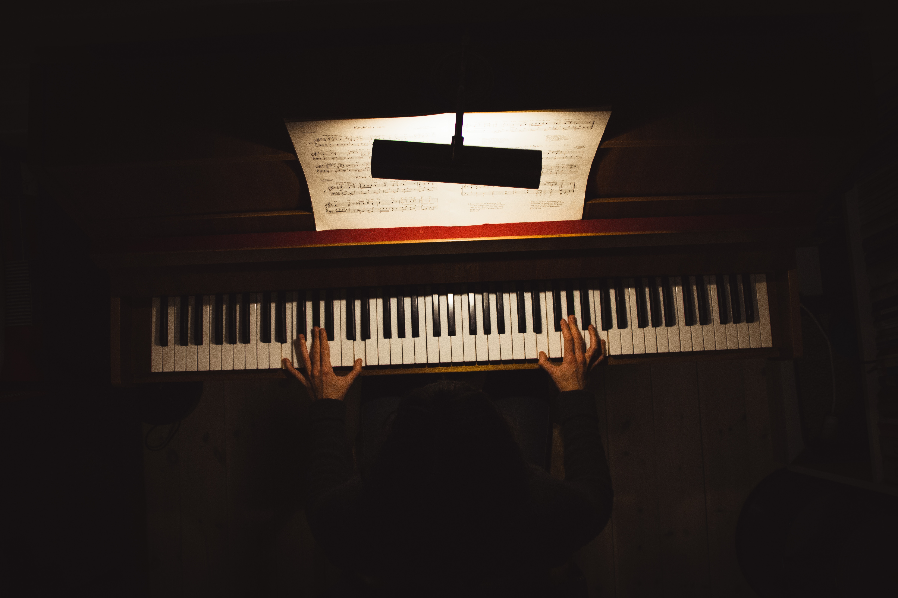

6세 때 친구들을 따라 피아노학원을 가게 되어 피아노를, 7세 때 바이올린을 시작했다. 10세 때 피아노에 전념하기로 결정[3]한 뒤 학원에서 피아노에 재능이 있다 하여 개인레슨을 받던 것을 그만두고 본격적으로 피아니스트의 길에 오르기 위해 예술의 전당 아카데미에 입학했다. 여기서 박숙련(순천대 인문예술대 피아노학과) 교수의 가르침을 받았다. 
이듬해인 2005년 음악춘추 콩쿠르에서 1위를 하며 두각을 드러내기 시작하면서 각종 콩쿠르를 석권했다. 12세 때 단독으로 금호 영재 콘서트를 가졌고, 음악세계 콩쿠르에서 대상을 차지하며 예원학교에 입학했다. 이 곳에서는 신수정 교수[4] 등을 사사했다.2008년 15세 때 모스크바 국제 청소년 쇼팽 피아노 콩쿠르에서 1위를 수상하며 본격적으로 해외 콩쿠르에서 입상하기 시작했다.